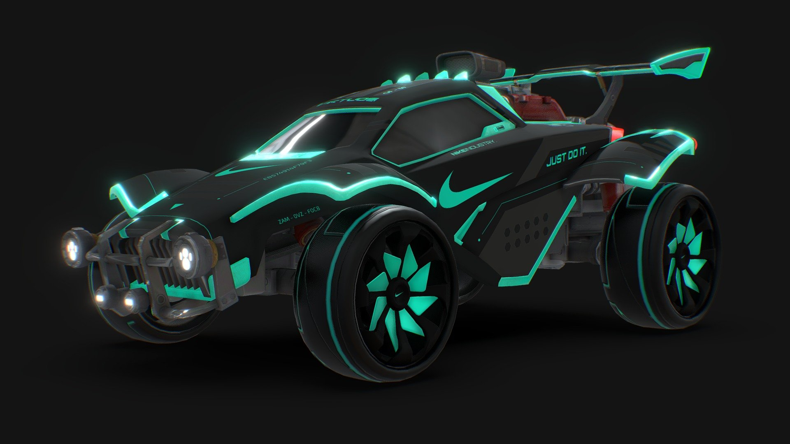
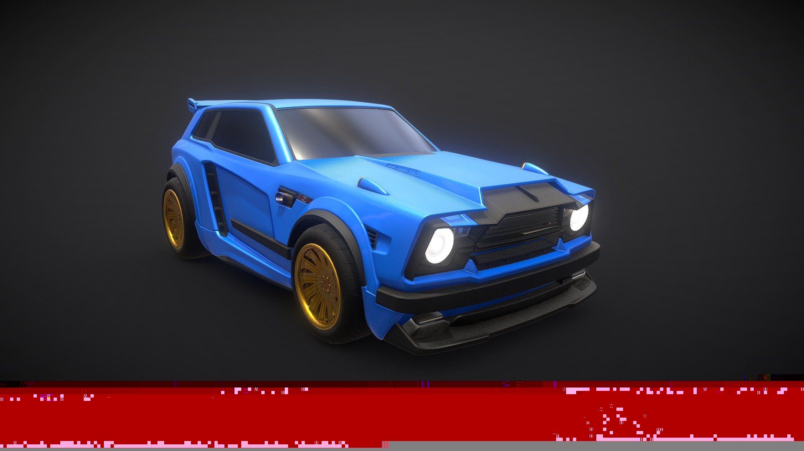
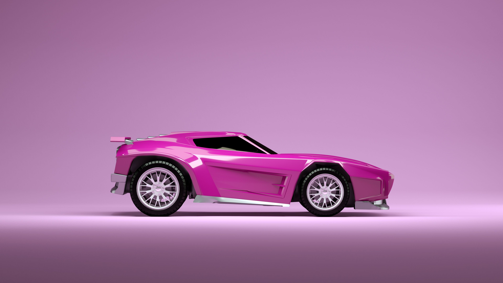

En Rocket League, los coches son vehículos personalizables y distintivos que los jugadores utilizan para competir en partidos de fútbol motorizado. Cada coche tiene características únicas en términos de velocidad, aceleración, manejo y tamaño del hitbox, lo que afecta directamente la estrategia y la jugabilidad. Los jugadores pueden personalizar sus coches con una variedad de carrocerías, pinturas, ruedas y otros accesorios para reflejar su estilo personal y maximizar su rendimiento en el campo.
OctaneEl Octane es uno de los coches más icónicos y populares del juego. Es conocido por su equilibrio entre velocidad, manejo y tamaño de hitbox, lo que lo convierte en una elección preferida tanto para jugadores principiantes como para profesionales. El diseño aerodinámico del Octane facilita movimientos precisos y rápidos en el campo, lo que lo convierte en una opción versátil para diferentes estilos de juego, desde defensivo hasta ofensivo. |
FennecEl Fennec es uno de los coches más populares entre los jugadores debido a su diseño distintivo y su rendimiento en el campo de juego. Conocido por su manejo ágil y su capacidad de golpeo efectiva, el Fennec ofrece una combinación equilibrada de velocidad y precisión que lo hace ideal para jugadores que prefieren un estilo de juego robusto y controlado. |
DominusEl Dominus es otro coche altamente valorado por los jugadores debido a su diseño robusto y su rendimiento en el campo de juego. Conocido por su estructura más baja y ancha en comparación con otros coches, el Dominus ofrece una sensación de estabilidad y control, ideal para maniobras precisas y golpes potentes. Su perfil aerodinámico facilita movimientos rápidos y ágiles, lo que lo convierte en una elección popular entre jugadores que prefieren un estilo de juego agresivo y ofensivo. |